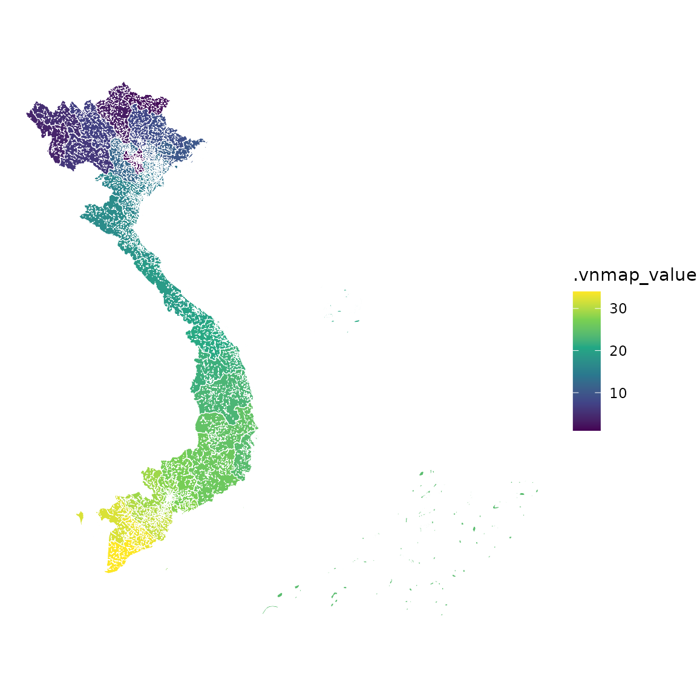
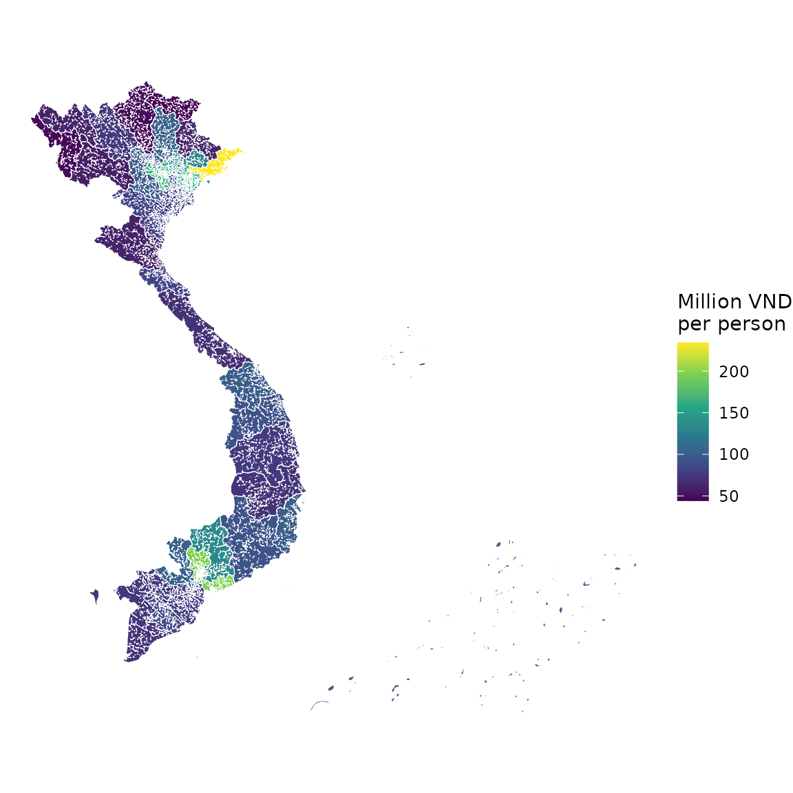
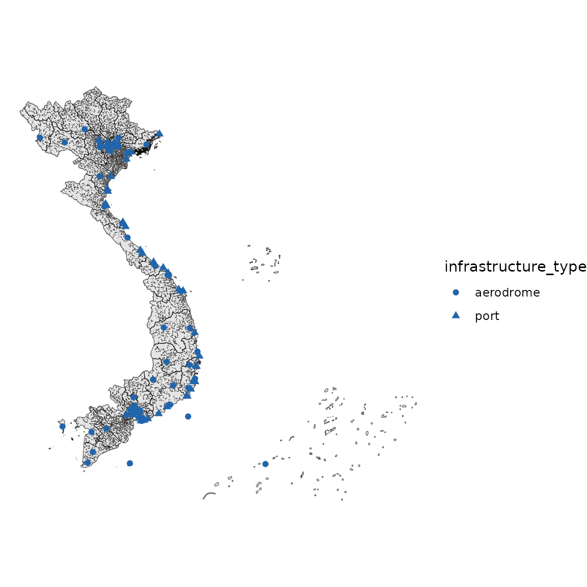
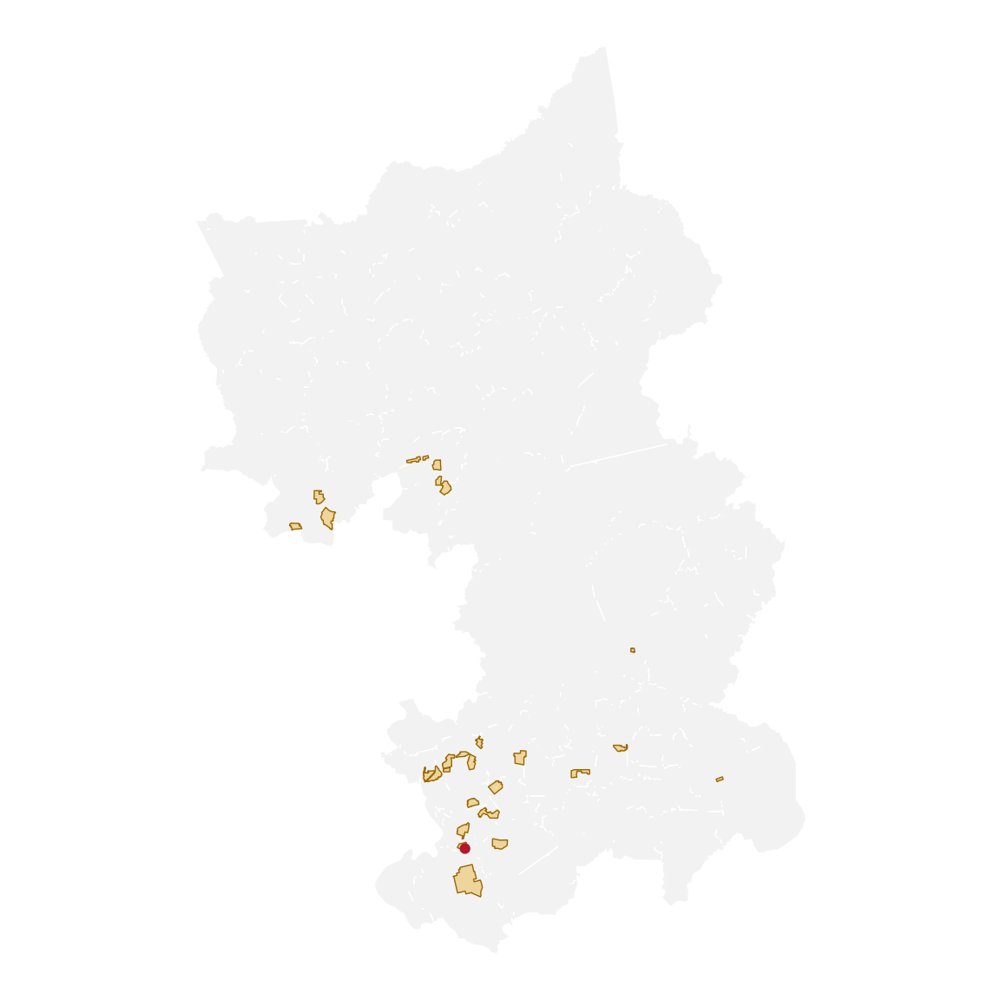

vnmap draws publication-ready choropleth maps of Viet
Nam and accounts for the July 2025 administrative reform, which replaced
the 63 provincial-level units with 34. It follows the compact API of usmap.
An outline map
plot_vnmap() with no data draws the current 34-unit
outline.
plot_vnmap(color = "white", linewidth = 0.2)
Joining your own data
Supply a data frame, the column holding the values, and the column that identifies each unit. Identifiers may be Vietnamese names (with or without diacritics), English names, common aliases, or official codes.
example <- data.frame(
province = province_info()$name_en,
value = seq_len(34)
)
plot_vnmap(
data = example, values = "value", id = "province",
color = "white", linewidth = 0.2
) +
scale_fill_viridis_c()
The package bundles official 2024 indicators, so a GRDP-per-capita map is one call away.
data(province_stats_2024)
plot_vnmap(
data = province_stats_2024,
values = "grdp_per_capita_million_vnd",
id = "code",
color = "white", linewidth = 0.2
) +
scale_fill_viridis_c(name = "Million VND\nper person")
Choosing a geography
The current 34-unit geography is the default. The 63-unit geography used before 1 July 2025 remains available for historical data.
Always choose the geography that matches the reference period and coding scheme of your data.
Current communes and the 2025 transition
The bundled commune layer is an observed 25 July 2026 snapshot. Its
province polygons are dissolved from the same source, so current parent
and child boundaries are spatially compatible. valid_from
is deliberately missing: the source snapshot does not establish a legal
effective date for every code.
hanoi <- vn_map("communes", province = "Ha Noi")
hanoi[c("code", "name_vi", "geography_vintage", "snapshot_date")]The NSO July 2025 conversion workbook is not bundled because redistribution terms have not been established. Downloading is explicit. The resulting table is many-to-many and reports whether each 2025 target code is present in the bundled 2026 snapshot; it contains no inferred area or population weights.
path <- download_administrative_crosswalk(tempfile(fileext = ".xlsx"))
cw <- administrative_crosswalk(path, province = "Ha Noi")
table(cw$relation, cw$current_code_status)
attr(cw, "current_snapshot_only_codes")Transport and logistics facilities
infrastructure() provides pinned redistributable
aerodrome, port, border-control and trunk-network geometry. These are
community mapping rather than an official register. Categories remain
neutral, entity aliases and border-control component roles are retained,
and unknown lifecycle status is preserved instead of treating every
mapped feature as operational.
table(infrastructure(crs = 4326)$infrastructure_type)
#>
#> aerodrome border_control expressway national_highway
#> 42 32 7650 22648
#> port railway
#> 80 3739
plot_vnmap() +
geom_infrastructure(type = c("aerodrome", "port"))
#> Coordinate system already present.
#> ℹ Adding new coordinate system, which will replace the existing one.
aerodrome does not establish commercial service and
port does not establish seaport status. Inspect
infrastructure_class, service_type,
status_source, facility_roles, and
location_accuracy before analysis. Province filtering uses
spatial intersection, so cross-province network segments are retained.
Network counts are OSM way segments rather than route counts. Lines
lacking the expected motorway, CT, QL, or
railway tags are outside this snapshot’s selection and should not be
interpreted as confirmed network absences. For railways, filter
class = "main_line" only when explicitly tagged
usage=main; yards, sidings, spurs, industrial and
unspecified lines remain separate. Network province_code is
deliberately missing because ways can span boundaries;
province_codes and province filtering use polygon
intersections.
Socio-economic regions
Every unit is tagged with one of the six General Statistics Office
socio-economic regions. Filter a map to a region with
region, or look the region up directly.
plot_vnmap(region = "MRD", labels = TRUE)
#> Warning in layer_sf(geom = GeomSf, data = data, mapping = mapping, stat = stat,
#> : Ignoring unknown parameters: `geom` and `check_overlap`
#> Warning in layer_sf(geom = GeomSf, data = data, mapping = mapping, stat = stat,
#> : Ignoring unknown aesthetics: label
province_region(c("HCMC", "Can Tho"))
#> [1] "Southeast" "Mekong River Delta"
head(province_info()[c("name_en", "region_code", "region_en")])
#> name_en region_code region_en
#> 1 Ha Noi RRD Red River Delta
#> 2 Cao Bang NMM Northern Midlands and Mountains
#> 3 Tuyen Quang NMM Northern Midlands and Mountains
#> 4 Dien Bien NMM Northern Midlands and Mountains
#> 5 Lai Chau NMM Northern Midlands and Mountains
#> 6 Son La NMM Northern Midlands and MountainsAssignments for the 63-unit geography are the official ones; assignments for the merged 2025 units follow their dominant predecessor by population.
Industrial parks
industrial_parks() returns a provenance-rich
sf layer. Use province, category,
status, or include to narrow it, and choose
either the best available geometry, polygons only, or representative
points.
head(industrial_parks(province = "Dong Nai", geometry = "point"))
#> Simple feature collection with 6 features and 20 fields
#> Geometry type: POINT
#> Dimension: XY
#> Bounding box: xmin: 674824.8 ymin: 1192445 xmax: 721647.4 ymax: 1269430
#> Projected CRS: VN-2000 / UTM zone 48N
#> id name_vi
#> 271 osm_node_12535607272 Amata City Long Thanh Industrial Park
#> 272 osm_way_597919509 Chon Thanh I Industrial Zone
#> 273 osm_way_583464295 Khu công nghiệp Amata
#> 274 osm_way_1462512216 Khu công nghiệp Bắc Đồng Phú
#> 275 osm_way_1462513965 Khu công nghiệp Bắc Đồng Phú Khu B
#> 276 osm_way_321136900 Khu công nghiệp Bàu Xéo
#> name_en aliases category
#> 271 <NA> <NA> industrial_park
#> 272 <NA> <NA> industrial_park
#> 273 <NA> Khu công nghiệp Amata (mở rộng) industrial_park
#> 274 <NA> <NA> industrial_park
#> 275 <NA> <NA> industrial_park
#> 276 Bau Xeo Industrial Park Bau Xeo Industrial Park industrial_park
#> province_code province_en former_province_code status area_ha
#> 271 75 Dong Nai 75 unknown NA
#> 272 75 Dong Nai 70 operational 246.3112
#> 273 75 Dong Nai 75 operational 600.1156
#> 274 75 Dong Nai 70 operational 167.1046
#> 275 75 Dong Nai 70 operational 408.1200
#> 276 75 Dong Nai 75 operational 524.0327
#> developer
#> 271 <NA>
#> 272 <NA>
#> 273 <NA>
#> 274 <NA>
#> 275 <NA>
#> 276 <NA>
#> website
#> 271 https://directorsdirectory.com/amata-city-long-thanh-industrial-park/
#> 272 <NA>
#> 273 <NA>
#> 274 <NA>
#> 275 <NA>
#> 276 <NA>
#> geometry_type location_accuracy part_count
#> 271 point locality 1
#> 272 point site 1
#> 273 point site 2
#> 274 point site 1
#> 275 point site 1
#> 276 point site 1
#> osm_ids source
#> 271 osm_node_12535607272 OpenStreetMap
#> 272 osm_way_597919509 OpenStreetMap
#> 273 osm_way_1016015905|osm_way_583464295 OpenStreetMap
#> 274 osm_way_1462512216 OpenStreetMap
#> 275 osm_way_1462513965 OpenStreetMap
#> 276 osm_way_321136900 OpenStreetMap
#> source_url verified_on attribute_source
#> 271 https://www.openstreetmap.org/node/12535607272 2026-08-31 osm
#> 272 https://www.openstreetmap.org/way/597919509 2026-08-31 osm
#> 273 https://www.openstreetmap.org/way/583464295 2026-08-31 osm
#> 274 https://www.openstreetmap.org/way/1462512216 2026-08-31 osm
#> 275 https://www.openstreetmap.org/way/1462513965 2026-08-31 osm
#> 276 https://www.openstreetmap.org/way/321136900 2026-08-31 osm
#> geometry
#> 271 POINT (710236 1192445)
#> 272 POINT (674824.8 1259902)
#> 273 POINT (709933.1 1212153)
#> 274 POINT (704675.8 1269430)
#> 275 POINT (706396.6 1267975)
#> 276 POINT (721647.4 1211356)
plot_vnmap(include = "Dong Nai", color = "white", fill = "grey95") +
geom_industrial_parks(province = "Dong Nai")
#> Coordinate system already present.
#> ℹ Adding new coordinate system, which will replace the existing one.
category keeps designations apart that Vietnamese law
does not treat as interchangeable. The default covers the national
register scope, khu cong nghiep and khu che xuat; provincial-tier
industrial clusters and hi-tech parks are returned only when asked
for.
table(industrial_parks(category = NULL)$category)
#>
#> export_processing_zone hi_tech_park industrial_cluster
#> 5 5 117
#> industrial_park
#> 295The bundled snapshot includes only parks with a redistributable
mapped location. Inspect location_accuracy,
geometry_type, and source_url before using it
for site-level analysis; it is not a legal boundary register.
Supplying your own basic information
Because the snapshot covers a fraction of the national register,
parks and attributes it does not carry can be supplied by the user.
industrial_parks_template() writes the columns that may be
filled in, and attributes reads them back: a row whose
id already exists updates that park, and a row with a new
id adds one from a name, province and coordinate.
extra <- data.frame(
id = "local_kcn_1",
name_vi = "Khu cong nghiep Vi Du",
province_code = "48",
area_ha = 120,
longitude = 108.15,
latitude = 16.05
)
parks <- industrial_parks(province = "Da Nang", attributes = extra)
table(parks$source)
#>
#> OpenStreetMap user
#> 9 1write_industrial_parks() sends a layer back out as CSV,
GeoJSON or GeoPackage. The CSV form carries longitude and
latitude, so it can be edited outside R and fed straight
back through attributes.
Economic and policy zones
Economic zones are legally distinct from industrial parks. The conservative first snapshot can be filtered by legal type, date, province, and status:
economic_zones(type = "border_gate_economic_zone", as_of = "2020-01-01")
plot_vnmap() + geom_economic_zones(type = "national_high_tech_park")Rows retain legal instruments and official URLs where verified;
missing row-level instruments remain explicit candidate records. All
initial geometries are deterministic province-only points, not legal
boundaries. The current catalogue has 20 coastal and 26 border-gate
records. The cited Ho Chi Minh City annex names three EPZs; it is not a
national completeness source. Unknown establishment dates are retained
by default in dated queries; use include_unknown = FALSE
for a strict panel. Economic zones can contain industrial parks, but the
two layers represent different legal entities.
Working without sf
The name, code, and region lookups, and the bundled statistics, do
not require the sf package. Only the geometry functions
(vn_map(), plot_vnmap(),
vnmap_crs()) do. This chunk always runs.
library(vnmap)
province_code(c("Da Nang", "Danang", "HCMC"))
#> [1] "48" "48" "79"
province_region("Bac Giang", geography = "provinces_63")
#> [1] "Northern Midlands and Mountains"